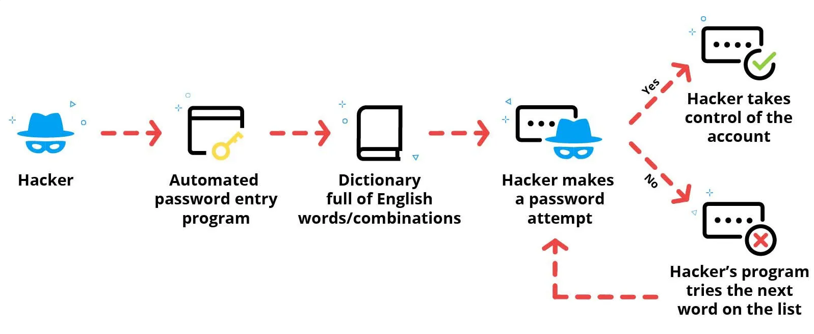
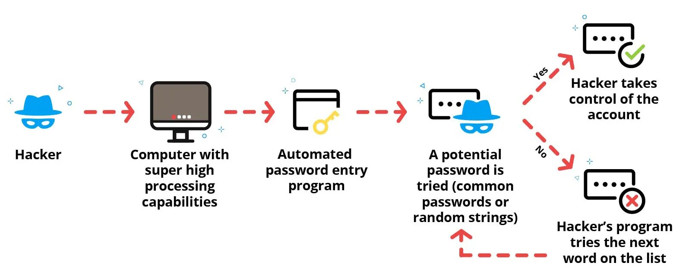

The CIA triad is the best-known model in information security. It names the three things security protects. They depend on one another, and every security control supports at least one of them. (You may also see it written as AIC, with availability first; it's the same model.)
A flood of traffic takes a company's online store offline for six hours. No data was stolen or changed. Which part of the CIA triad was attacked?
Customers couldn't reach the store, so availability was lost. This is a denial-of-service (DoS) attack.
A dictionary attack tries a list of likely passwords: common words, names, and passwords leaked in earlier data breaches, often with numbers or symbols added the way people usually add them ("Summer2025!"). Attackers don't need to try every word in the language: lists of millions of real leaked passwords crack weak passwords quickly.

A brute force attack tries every possible combination: aaaaaaaa, then aaaaaaab, and so on. The number of combinations grows fast with length. An 8-character password using upper- and lowercase letters and digits has 628, about 218 trillion, combinations; each extra character multiplies that by 62. That's why length matters more than anything else in a password.

Defenses: long passwords or passphrases, multifactor authentication, and account lockout or rate limiting after several failed attempts. Lockout only stops guessing against a live login page. If attackers steal a file of stored password hashes, they can guess offline as fast as their hardware allows, which is why stored passwords must be properly hashed and why long passwords still matter.
Social engineering attacks the person instead of the computer: the attacker tricks someone into giving away information or access. Forms you need to know:
Warning signs in a phishing message: urgency ("your account will be closed today"), a sender address that's slightly wrong (such as micros0ft.com), links whose real address doesn't match the text, and requests for passwords or payment. When in doubt, contact the company through its official website or phone number, not the details in the message. Legitimate companies don't ask for your password by email.
Video: Professor Messer, "Social Engineering – CompTIA A+ 220-1202 – 2.5" (free A+ course).
At a coffee shop, an attacker sets up a hotspot called "CoffeeShop_Free", relays users' traffic to the internet and reads it on the way. What is this?
The fake hotspot is an evil twin, and sitting between users and the internet to read their traffic is an on-path (man-in-the-middle) attack.
A caller says they're from the help desk and asks an employee to read out the code just sent to their phone. What kind of attack is this?
It's social engineering by phone: vishing. Smishing uses text messages. Real help desks never ask for your sign-in codes.
Some kinds of data are protected by law or by industry rules. Organizations that hold them must protect them, and a breach can bring large fines.
The Payment Card Industry Data Security Standard (PCI DSS) is set by the major card companies. Any organization that stores, processes or sends card data must follow it. It has 12 requirements under six goals. The current version is 4.0.1.
| Goal | Requirements |
|---|---|
| Build and maintain a secure network and systems | 1. Install and maintain network security controls (such as firewalls). 2. Apply secure configurations to all systems (no vendor default passwords). |
| Protect account data | 3. Protect stored account data. 4. Use strong encryption when sending cardholder data over open, public networks. |
| Maintain a vulnerability management program | 5. Protect all systems and networks from malicious software. 6. Develop and maintain secure systems and software. |
| Implement strong access control measures | 7. Restrict access to cardholder data by business need to know. 8. Identify users and authenticate their access. 9. Restrict physical access to cardholder data. |
| Regularly monitor and test networks | 10. Log and monitor all access to systems and cardholder data. 11. Test the security of systems and networks regularly. |
| Maintain an information security policy | 12. Support information security with organizational policies and programs. |
In the United States, the Health Insurance Portability and Accountability Act (HIPAA) sets the rules for health information held by healthcare providers, health plans and the companies that work for them. Two parts matter most to IT:
| Law | What it does |
|---|---|
| Family Educational Rights and Privacy Act (FERPA), United States | Protects student education records at schools that receive U.S. Department of Education funding. Students (or parents of younger students) can see and ask to correct their records, and schools generally need written consent before sharing them. |
| California Consumer Privacy Act (CCPA), amended by the California Privacy Rights Act (CPRA) | In effect since 2020. Gives California residents rights over the personal information businesses collect about them: to know what is collected, to delete it, to correct it, and to opt out of its sale or sharing. |
| General Data Protection Regulation (GDPR), European Union | In effect since 2018. Protects the personal data of people in the EU, and applies to any organization in the world that handles their data. It gives people rights such as access, correction and deletion ("the right to be forgotten") and allows fines of up to 4% of a company's worldwide yearly revenue. Many companies give these rights to all their users. |
An online store keeps customers' credit card numbers so they can check out faster. Which standard must it follow?
PCI DSS applies to anyone who stores, processes or sends payment card data. HIPAA covers health data, and FERPA covers student records.
Cybersecurity Curriculum | CyberSec Basics